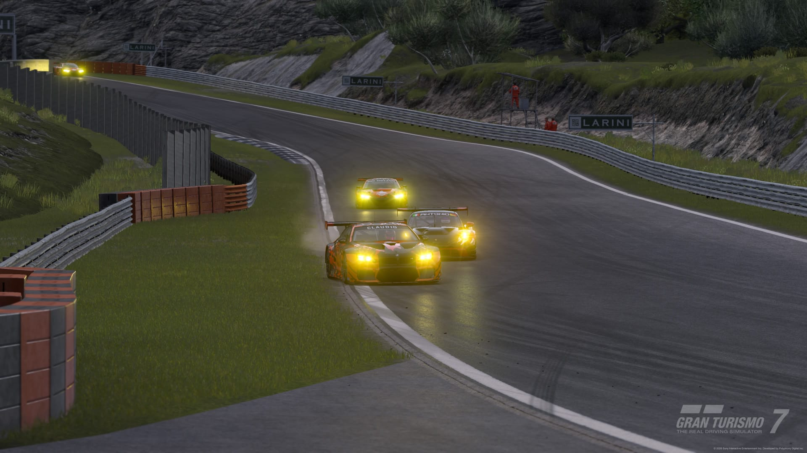
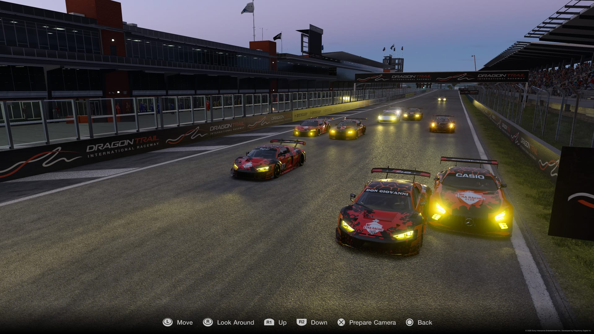
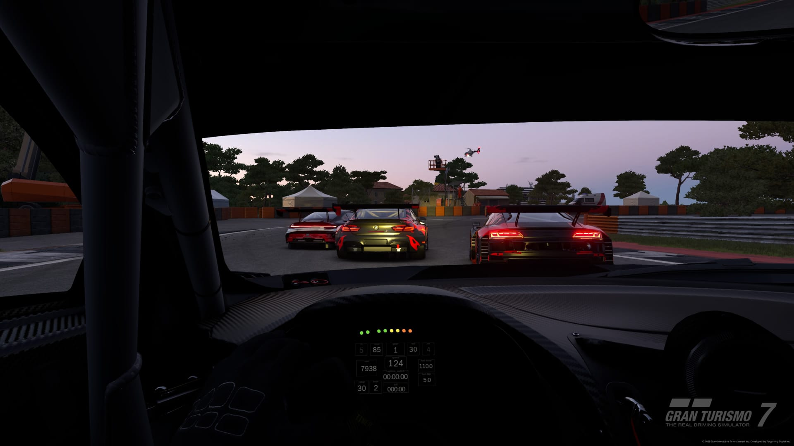
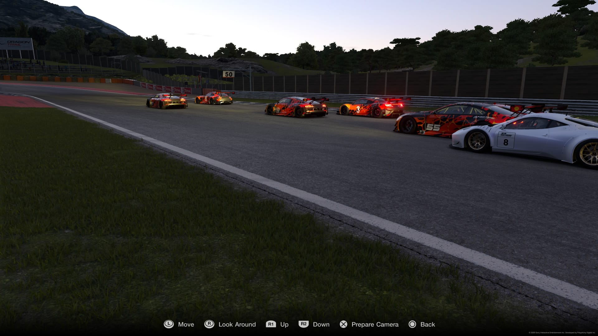
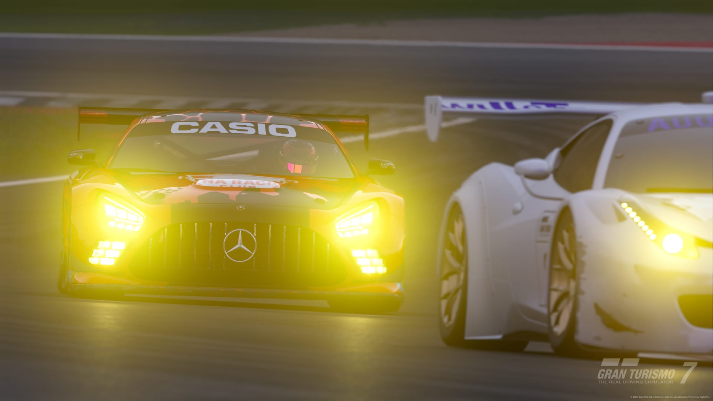
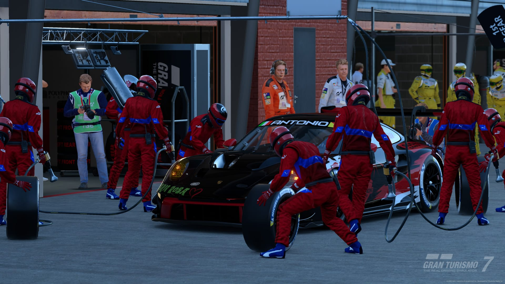
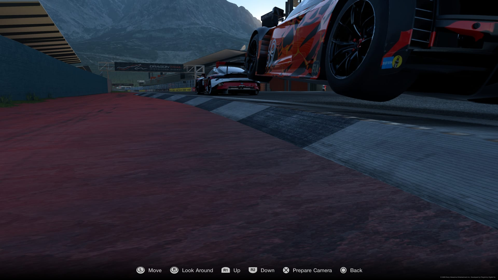

Si è da poco conclusa gara 1 del campionato Gr 3 nella pista di Dragon Trail - Litorale, sono stati in 10 i piloti che si sono contesi la vittoria
Il meteo ci ha regalato un’ottima opportunità per la gara odierna, molto sole e pochissime nuvole nonostante la gara sia partita nelle primissime ore del mattino
Alla fine delle qualifiche a prevalere è stato Giovanni che si è messo dietro nell’ordine Carmine, Stefano, Claudio, Antonio, Pierpaolo, Spinotto, William, Daniele e Cola
La gara è partita con qualche contatto nelle prime curve, contatti che poi hanno portato a fine gara diverse problematiche tra i piloti, non appena la gara si è stabilizzata abbiamo comunque assistito ad una gara piena di emozioni, come ad esempio la gara di testa che ha visto coinvolti Giovanni Claudio e Antonio, ma anche le disperate rimonte di Carmine Pierpaolo e Stefano
Dopo una gara con tanti cambiamenti di posizioni a spuntare vincitore è stato Antonio che ha preceduto Pierpaolo di poco meno di 10 secondi, poi Giovanni che si è girato dopo l’ultima curva nel tentativo disperato di andare a vincere, quarto è arrivato Carmine, anche se in gara era arrivato secondo, ma a causa di una penalità di 10 secondi è retrocesso fuori dal podio, a seguire sono arrivati Claudio, Stefano, Spinotto, William e Daniele, discorso diverso per Cola che non ha comunicato in tempo il cambio di vettura venendo quindi squalificato dalla gara
L’appuntamento adesso si sposta al Trofeo Super Turismo diviso in 3 manches, ci sarà sicuramente da divertirsi





